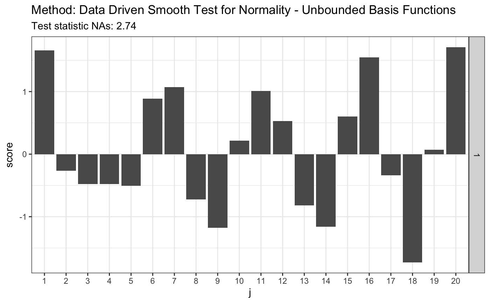

ddst.normubounded.test.RdPerforms data driven smooth test for composite hypothesis of normality. Null density is given by \( f(z;\gamma)=1/(\sqrt{2 \pi}\gamma_2) \exp(-(z-\gamma_1)^2/(2 \gamma_2^2))\) for \(z \in R\).
ddst.normubounded.test(x, d.n = 20, r, e.0, v.0, s, so)
| x | a (non-empty) numeric vector of data values |
|---|---|
| d.n | an integer, number of coordinates that measure potential deviation from null hypothesis |
| r | critical value for selection rule (test on the significance level alpha). See equation 8 and Table 1 in the JSCS article. |
| e.0 | bias for finite sample size, calculated with |
| v.0 | variance for finite sample size, calculated with |
| s | see section 4. Finite sample corrections, test statistics and simulation results in the JSCS paper |
| so | see section 4. Finite sample corrections, test statistics and simulation results in the JSCS paper |
| n | length of |
| nr | number of MCMC replications for finite sample size corrections |
Ledwina, T., Wyłupek, G. (2015) Detection of non-Gaussianity by Ledwina and Wyłupek Journal of Statistical Computation and Simulation 17, 3480-3497.
set.seed(7) # H0 is true z <- rnorm(100) # let's look on first 20 coordinates d.n <- 20 # calculate finite sample corrections # see 6.2. Composite null hypothesis H in the appendix materials e.v <- ddst.normunbounded.calculate.e.v(n = length(z)) e.v#> $e.0 #> [,1] [,2] [,3] [,4] [,5] [,6] #> [1,] -0.003118967 -0.6935202 -0.002956126 -0.6265916 0.005252232 0.2493225 #> [,7] [,8] [,9] [,10] [,11] [,12] #> [1,] -0.005572803 0.1643331 0.005080106 -0.3043065 -0.004364685 0.2281225 #> [,13] [,14] [,15] [,16] [,17] [,18] #> [1,] 0.003663833 -0.0634837 -0.003039499 -0.08895209 0.002489759 0.1769821 #> [,19] [,20] #> [1,] -0.002005891 -0.1897025 #> #> $v.0 #> [,1] [,2] [,3] [,4] [,5] [,6] [,7] #> [1,] 0.9478394 0.8147186 0.6556153 0.5867975 0.6271109 0.5654675 0.5199736 #> [,8] [,9] [,10] [,11] [,12] [,13] [,14] #> [1,] 0.5518196 0.4929518 0.489381 0.4978907 0.4511839 0.4736793 0.4533477 #> [,15] [,16] [,17] [,18] [,19] [,20] #> [1,] 0.4349451 0.4562587 0.4146035 0.4384759 0.4171397 0.4095434 #># simulated 1-alpha qunatiles, s(n, alpha) and s.o(n, alpha) # see Table 1 in the JSCS article s <- 4.4 so <- 4.8 r <- 2.708 t <- ddst.normubounded.test(z, d.n, r, e.v$e.0, e.v$v.0, s, so) t#> #> Data Driven Smooth Test for Normality - Unbounded Basis Functions #> #> data: z, d.n: 20 #> NAs = 2.7435, As = 1 #>plot(t)# for Tephra data z <- c(-1.748789, -1.75753, -1.740102, -1.740102, -1.731467, -1.765523, -1.761521, -1.72522, -1.80371, -1.745624, -1.872957, -1.729121, -1.81529, -1.888637, -1.887761, -1.881645, -1.91518, -1.849769, -1.755141, -1.665687, -1.764721, -1.736171, -1.736956, -1.737742, -1.687537, -1.804534, -1.790593, -1.808661, -1.784081, -1.729903, -1.711263, -1.748789, -1.772755, -1.72756, -1.71358, -1.821116, -1.839588, -1.839588, -1.830321, -1.807835, -1.747206, -1.788147, -1.759923, -1.786519, -1.726779, -1.738528, -1.754345, -1.781646, -1.641949, -1.755936, -1.775175, -1.736956, -1.705103, -1.743255, -1.82613, -1.826967, -1.780025, -1.684504, -1.751168) # calculate finite sample corrections e.v <- ddst.normunbounded.calculate.e.v(n = length(z)) e.v#> $e.0 #> [,1] [,2] [,3] [,4] [,5] [,6] #> [1,] 0.002960497 -0.786347 -0.007275675 -0.5197478 0.006042673 0.3566616 #> [,7] [,8] [,9] [,10] [,11] [,12] #> [1,] -0.002625205 0.002808939 -0.0007813586 -0.2222696 0.003083643 0.2636759 #> [,13] [,14] [,15] [,16] [,17] [,18] #> [1,] -0.003964416 -0.1838895 0.003567803 0.0545118 -0.002258491 0.06838432 #> [,19] [,20] #> [1,] 0.0004592918 -0.1519955 #> #> $v.0 #> [,1] [,2] [,3] [,4] [,5] [,6] [,7] #> [1,] 0.9324423 0.7723052 0.602284 0.589541 0.6023453 0.5133311 0.5229518 #> [,8] [,9] [,10] [,11] [,12] [,13] [,14] #> [1,] 0.521809 0.4636365 0.494106 0.4610935 0.4451275 0.4641293 0.4190831 #> [,15] [,16] [,17] [,18] [,19] [,20] #> [1,] 0.44337 0.422588 0.4088719 0.4303038 0.3836198 0.4231283 #>s <- 3.3 so <- 3.6 r <- 2.142 t <- ddst.normubounded.test(z, d.n, r, e.v$e.0, e.v$v.0, s, so) t#> #> Data Driven Smooth Test for Normality - Unbounded Basis Functions #> #> data: z, d.n: 20 #> NAs = 9.0037, As = 3 #>plot(t)